By convolving the image with the D_x and D_y kernels, we can calculate how pixel values change in the horizontal and vertical directions. Applying the D_x kernel detects changes along the x-axis, highlighting vertical edges, while applying the D_y kernel captures changes along the y-axis, emphasizing horizontal edges. Using these results, we calculate the gradient magnitude, which represents the overall strength of edges at each point. This is done by combining the horizontal and vertical derivatives: gradient magnitude = np.sqrt(im_dX ** 2 + im_dY ** 2). To generate a clean, sharp edge map, we apply a threshold, converting gradient magnitudes above a certain value (e.g., 0.3) to white (1) and those below to black (0), resulting in a binary image that clearly outlines the edges.
Image:
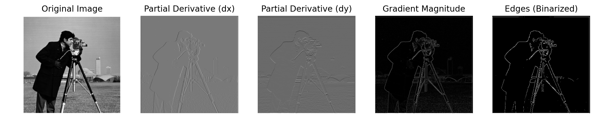
For Part 1.2, we perform the same process as 1.1 to obtain the edge image but we first blur the image with a 2D Gaussian convolution. By blurring the image first, we can get rid of some of the noise in the original image so sthat our edge image is smoother. For the kernel size, I chose a kernel size of 12 because a larger kernel size means more neighboring pixels contribute to the smoothing, which results in more blur and thus more significant smoothing. This helps to reduce the noise in the image and makes the edges more prominent after applying the derivative.
Since the sigma values impact the spread of the gaussian, I chose 2 because it is a moderate value that blurs the image effectively without overly distorting it. Smaller sigma would result in less blur, while a larger sigma produces a stronger smoothing effect. To make the 2D Gaussian, I took the outer product of the 1D Gaussian with its transpose. For the convolutions, used the convolve2d function from the scipy signal library. The arguments I used for the function were boundary = 'symm' since reflecting boundary pixels produced the best image results and the mode, 'same' helped preserve the size of the output image to be the identical to the original.
Images:
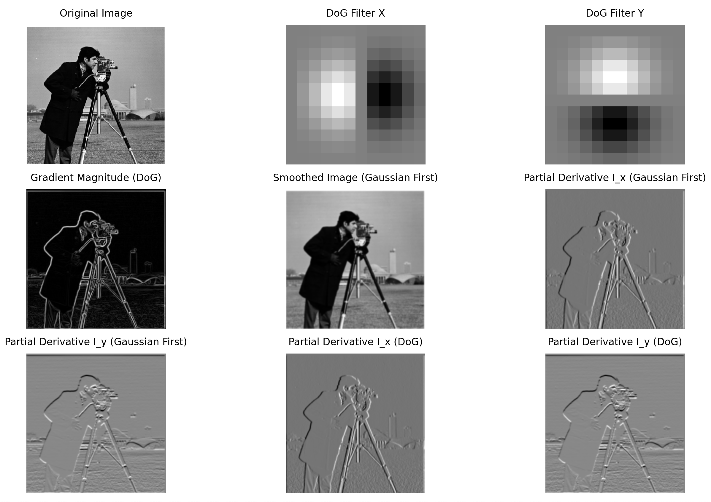
Answer to 1.2: Comparing the images in 1.2 to 1.1, we notice that blurring the image beforehand reduces noise in the final edge image. However, this also results in the edges to be slightly blurrier. Due to the associative property of convolution, we find that applying a Gaussian derivative filter first and then convolving it with the image gives the same result as in 1.1. Thus, we attain the same images in in both parts.
To sharpen an image using the unsharp masking technique, we first apply a Gaussian blur to the image to create a low-pass filtered version. Then, we subtract the blurred image from the original to isolate the high frequencies. By adding a scaled amount (by the coefficient "alpha) of these high frequencies back to the original image, you can enhance the sharpness. Higher alphas correspond the stronger higher frequencies in the resulting image. However, if your alpha is too high the output image will look too noisy and have extra artifacts.
Images:
For the Taj image, I found that the alpha that produced the best results visually was alpha = 1.0
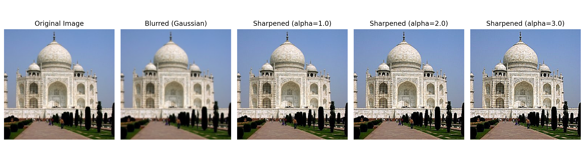
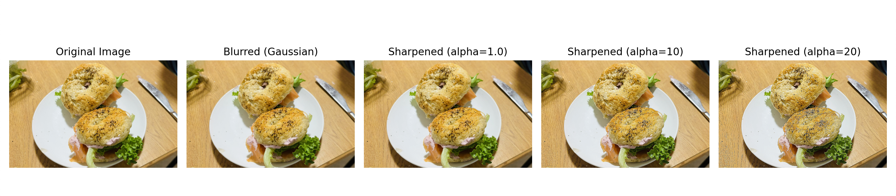
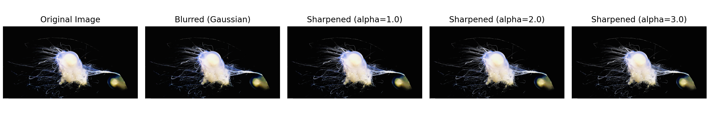
Hybrid images are created by combining high-frequency details from one image and low-frequency details from another. Below, I show three examples of the hybrid images I made and I used cutoff frequencies that I thought gave visually the best results through experimentation.
How hybrid images work is that, for the human visual system, lower frequencies dominate at a distance because our eyes focus on broader structures and up close, the high-frequency image dominates due to its sharp details.
For the cat and man hybrid image, I aligned both image by selecting their irises. For the poster image, I did something similar but aligned it by clicking on the corners of the "K" and "P" in "Keep." Finally, for the third image, I selected the locations of the nostrils to align for the final hybrid image.
Images:
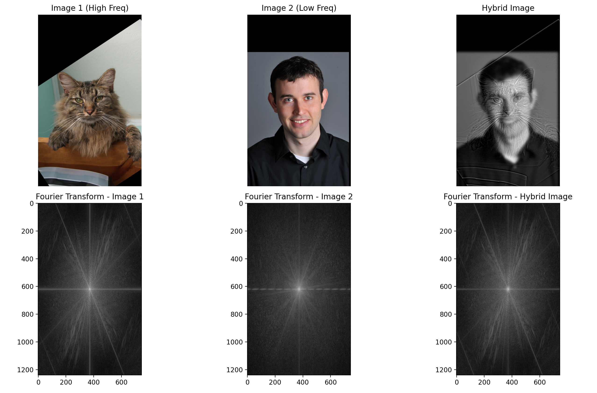
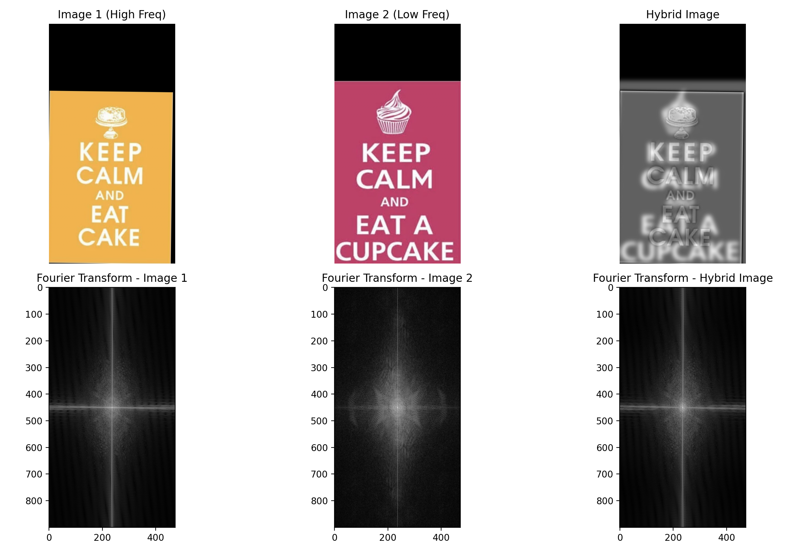
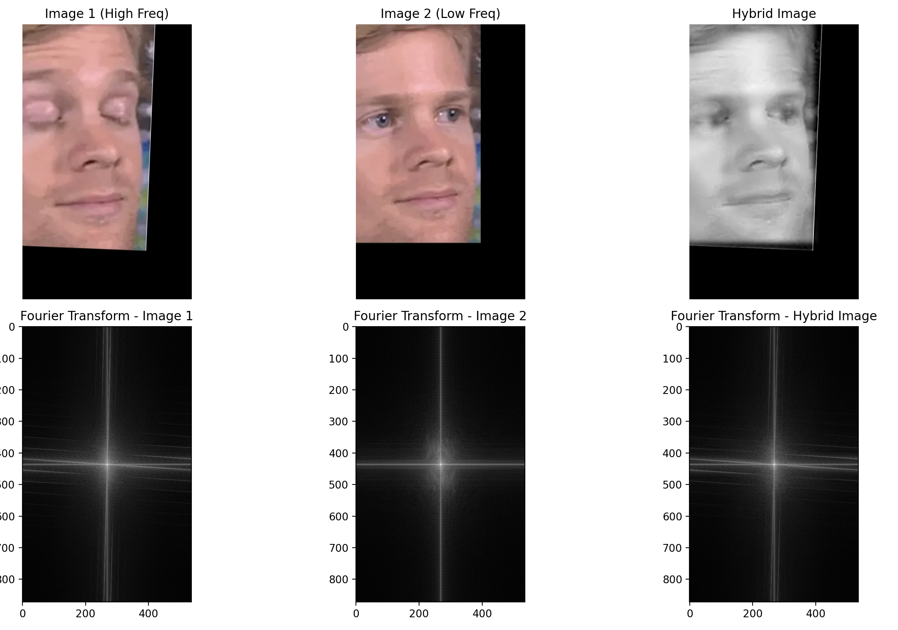
For this part, I implemented Gaussian and Laplacian stacks to prepare images for multi-resolution blending, as described in Burt and Adelson's 1983 paper. The Gaussian stack is created by continuously applying a Gaussian blur to the image without downsampling, making sure level has the same dimensions as the original picture. The Laplacian stack is then generated by subtracting consecutive levels of the Gaussian stack, capturing high-frequency details at each level. Both stacks are visualized through normalization to display the varying frequency components at each layer. Doing this allows for smooth image blending, by aligning the frequency bands and blending them at different resolutions.
Images:
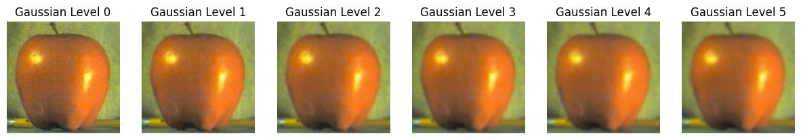
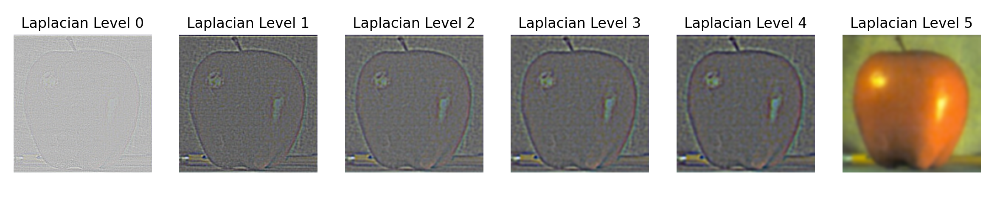
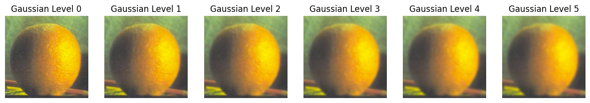
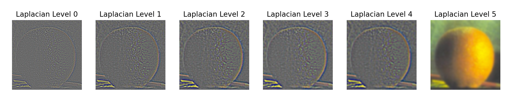
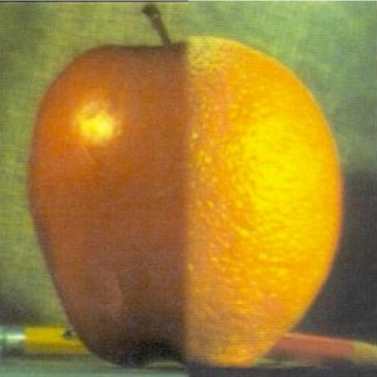
Here, to make the orapple I make a half mask that is generated as a step function that blends across the seam. I use Gaussian blurring of the mask to make a smooth transition between the two images and I reconstruct the image by combining the blended Laplacian stacks from both images. I also use this method and an irregular mask to make my last image where I blend the Japanese Flag and the Linkedin Logo.
The Orapple left and right stacks:
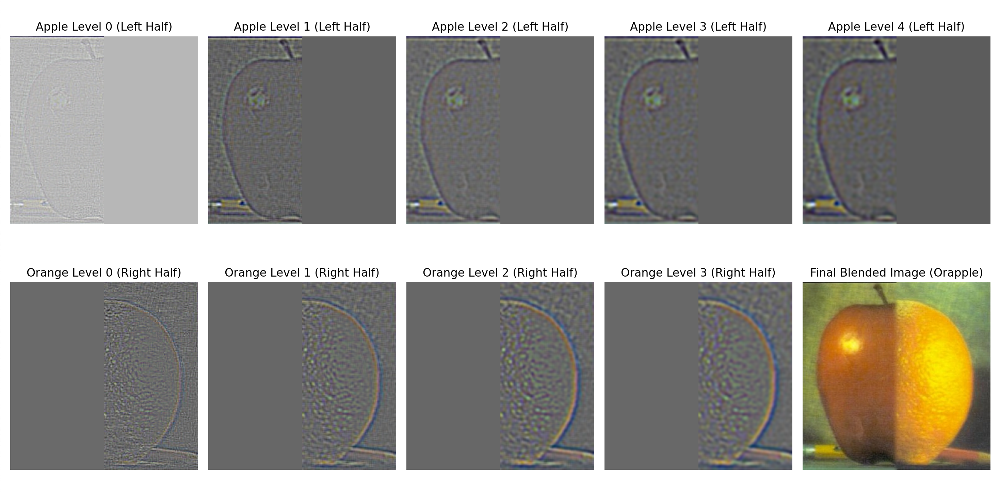
Below are some additional blends with the last one being an irregular mask
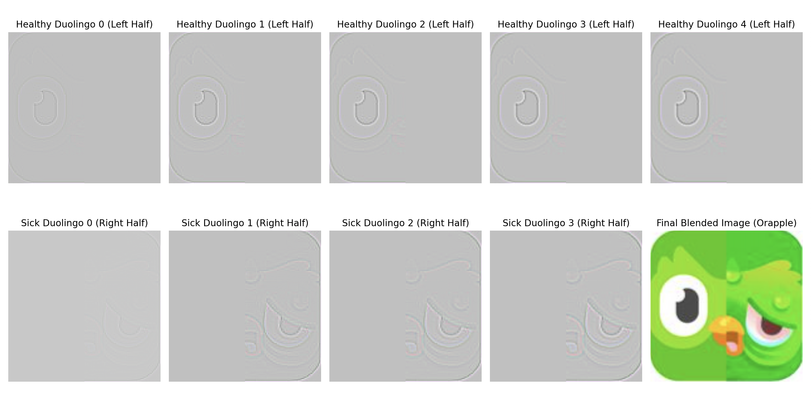
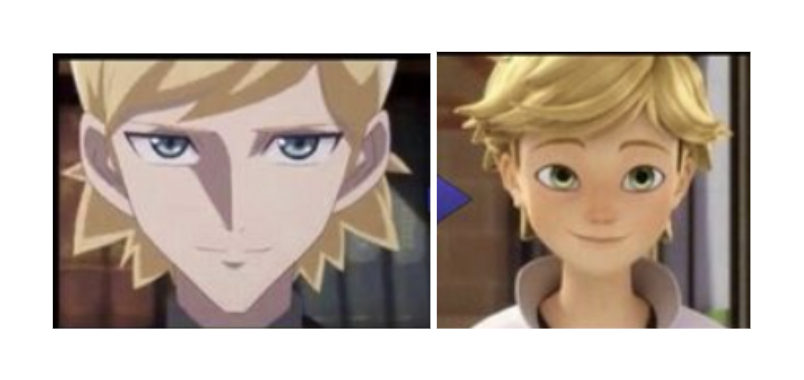
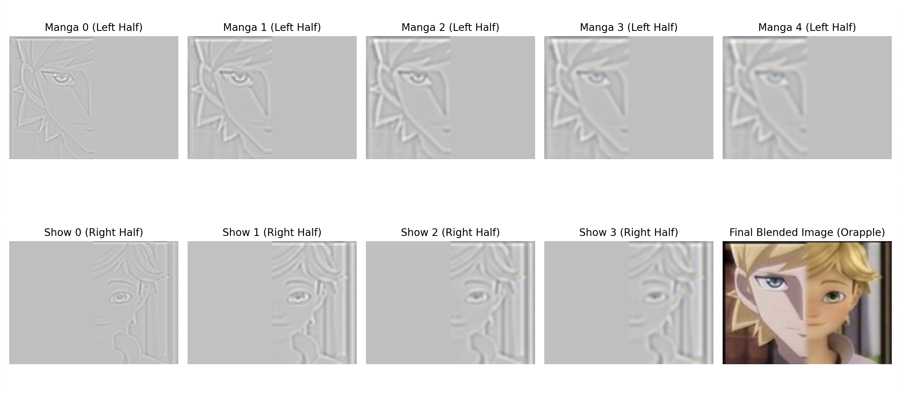
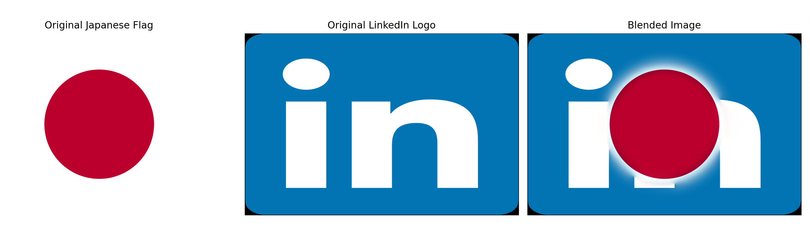
CS180 - Project 2 | September 2024 | Author: Annie Zhang